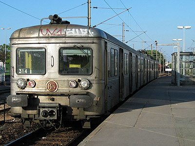
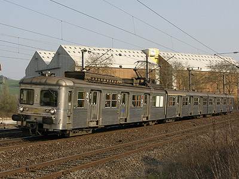

Z 6300
Les Z 6300 sont des éléments automoteurs monocourants 25 kV alternatif 50 Hz tricaisses dérivées des Z 6100 et dont les caisses ont été réduites en longueur pour s'adapter aux quais courts et aux rayons serrés de la gare Paris St Lazare. Comme les 6100, elles sont construites en inox selon le procédé de soudure Budd. Une motrice à un seul bogie moteur et une voiture pilote encadrent une remorque.
Les 35 rames ont été mises en service entre 1967 et 1970.
Elles ont servi en banlieue parisienne sur le réseau Ouest. Certains éléments ont été mutés en Lorraine sur l'axe Nancy-Thionville et quatorze ont été revendus en Roumanie où ils effectuent une seconde carrière.
Quelques données techniques
Constructeur : Carel et Fouché
Tension d'alimentation : monophasé 25 kV - 50 Hz
Pour plus d'info :
La fiche Z 6300 sur Wikipedia
L'inventaire des Z 6300 sur Trains du Sud-Ouest

La Z 6314 à Conflans Ste Honorine (11/05/2003)

La Z 6320 au nord de Nancy (04/04/2007)